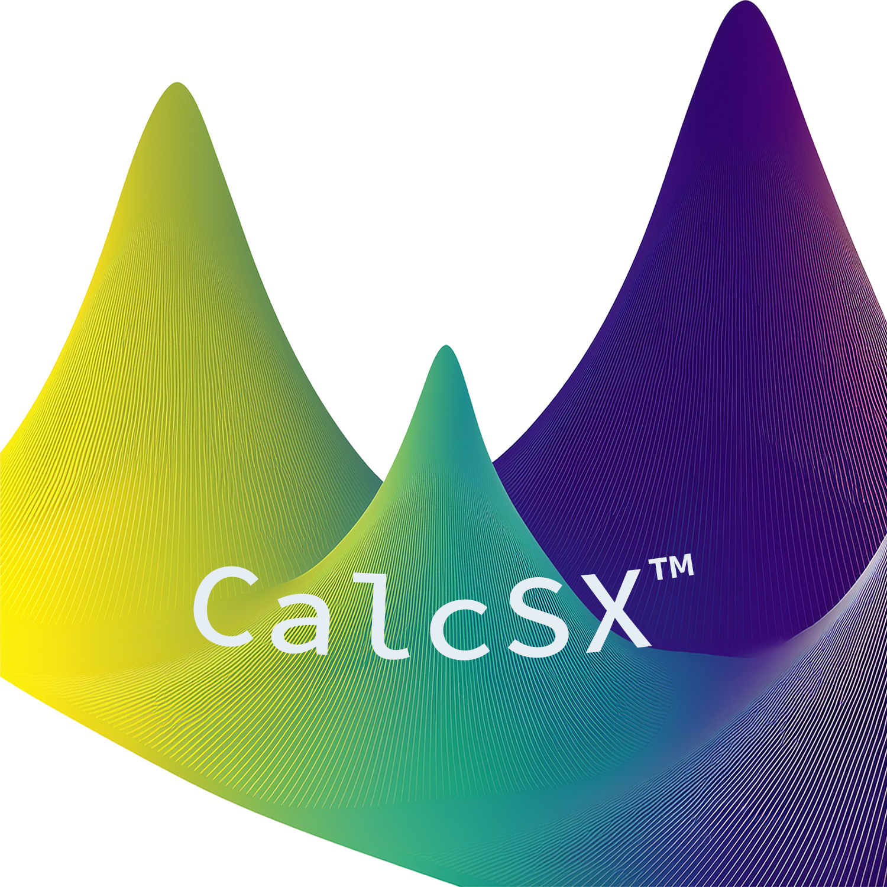
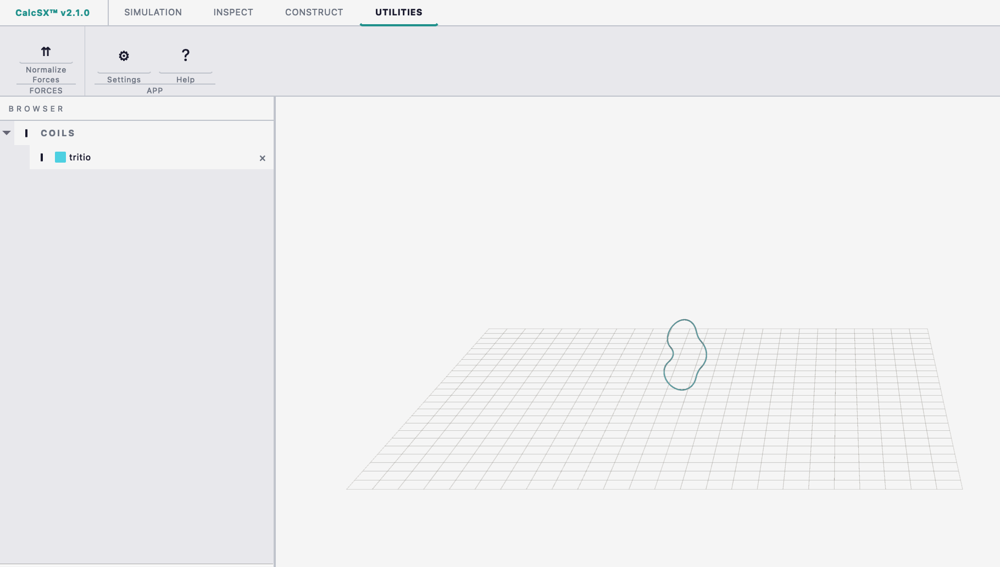
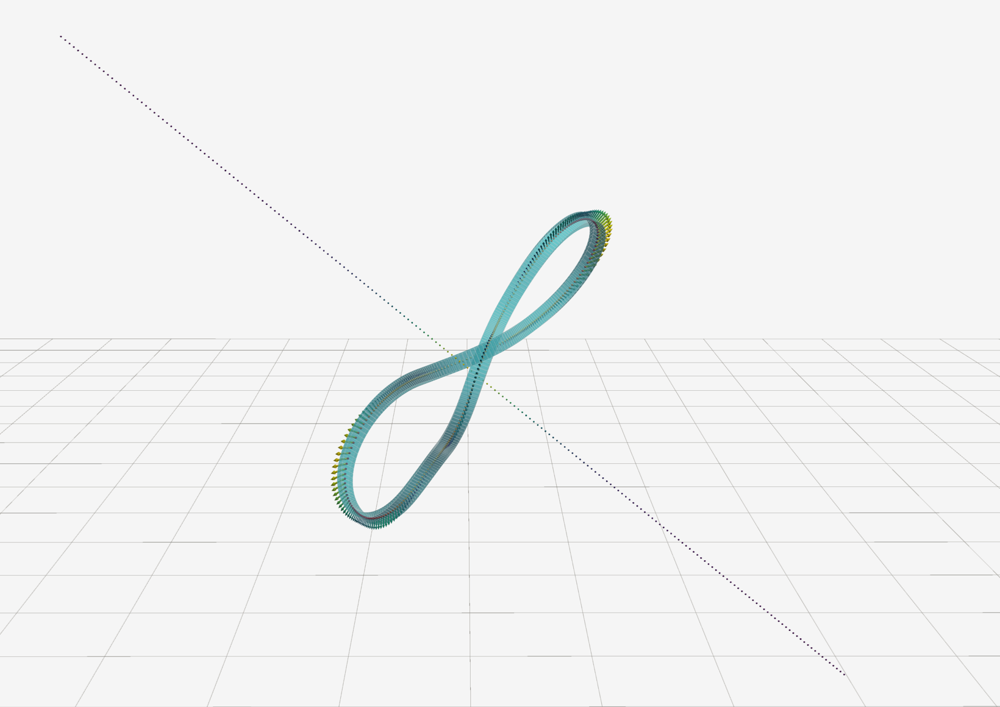
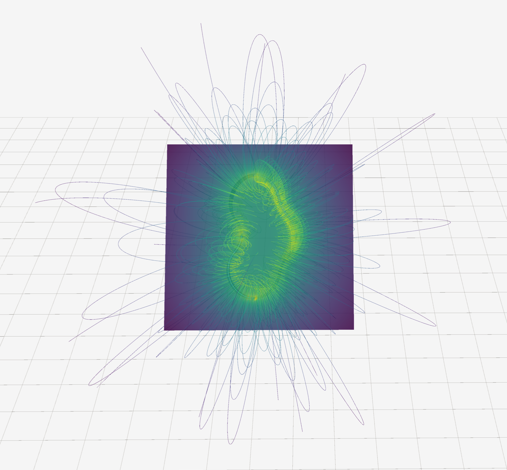
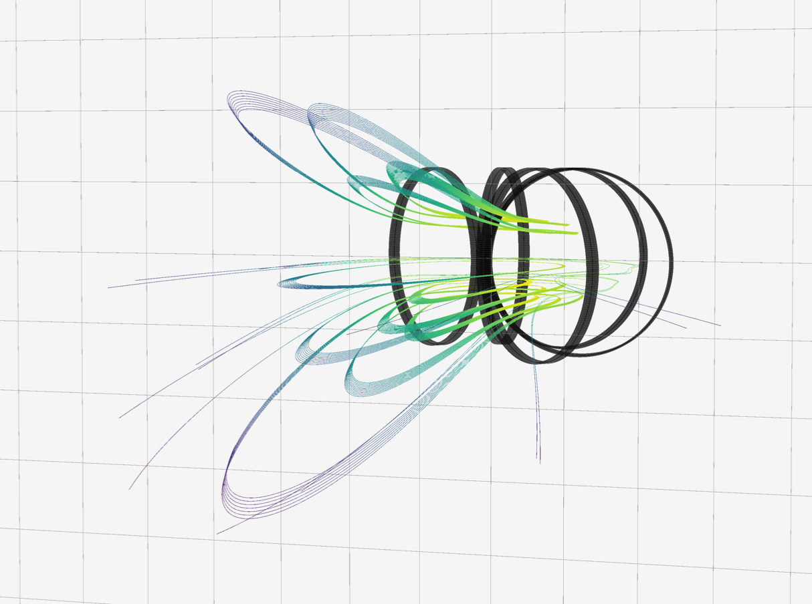

◎
B-field analysis
Vectorized Biot-Savart with Gauss-Legendre sub-filament discretization. On-axis sampling and centroid evaluation.

Load coil geometry. Compute B-field, Lorentz forces, hoop stress, 3D magnetic streamlines, and cross-section heatmaps — all with full multi-coil superposition.
Vectorized Biot-Savart with Gauss-Legendre sub-filament discretization. On-axis sampling and centroid evaluation.
Per-segment J×B arrow glyphs colored by magnitude. Each coil sees forces from every other coil via superposition.
Membrane decomposition hoop stress (MPa) as a midpoint point cloud for rapid inspection of critical regions.
Magnetic streamlines via batched RK4 integration. Per-coil or global topology with conductor exclusion.
2D B-field magnitude sliced along the symmetry axis. Configurable grid density.
Physics-aware environment with staleness tracking. Add, remove, or move coils and re-analyze the full field.
CSV with x, y, z columns. Open loops close automatically. PCA detects the symmetry axis.

Configure winds, current, tape dimensions. Run analysis — B-field, force, and stress layers appear.

Toggle 3D field lines, cross-section heatmaps, and layer visibility. Add coils for multi-coil superposition.

pip install numpy scipy pandas matplotlib \
PyQt5 scikit-learn pyvista pyvistaqt
python -m CalcSX_app.mainPython 3.9+. Apple Silicon supported via pip (VTK 9.2+).
x,y,z
0.1000,0.0000,0.0000
0.0707,0.0707,0.0010
0.0000,0.1000,0.0020
-0.0707,0.0707,0.0010
-0.1000,0.0000,0.0000
...Three columns, case-sensitive. Open loops close automatically.
Winds Winding turns
Current Operating current (A)
Tape thickness REBCO radial dim
Tape width REBCO axial extent
Sub-filament grid: 1×1 → 4×4
(auto-scaled by winding geometry)Volumetric current via Gauss-Legendre sub-filament discretization.

Run from source today, or watch for signed desktop builds.
Signed build planned. Run from source now.
Download test fileSigned build planned. Apple Silicon supported.
Download test file